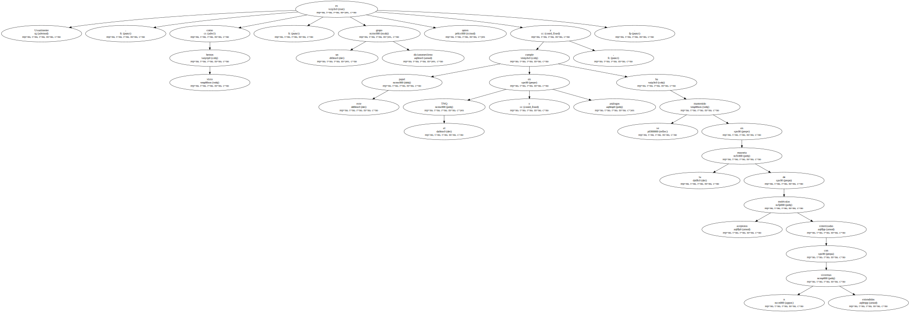
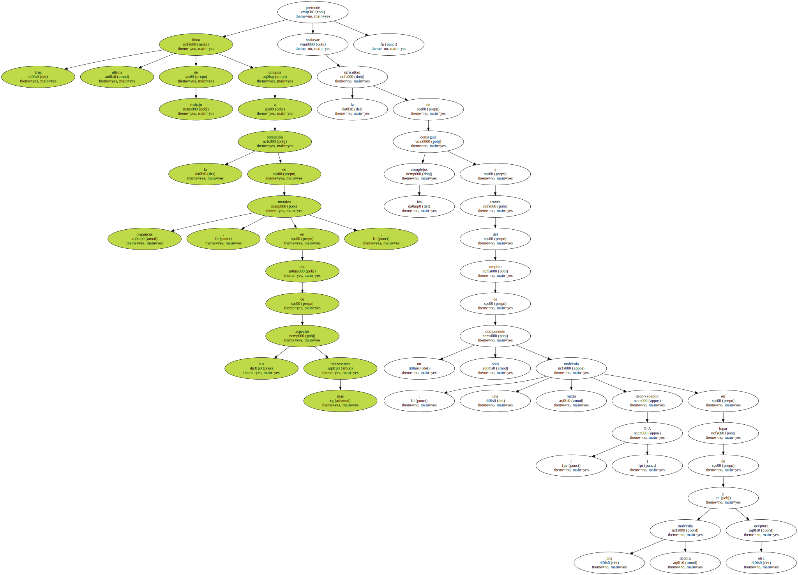
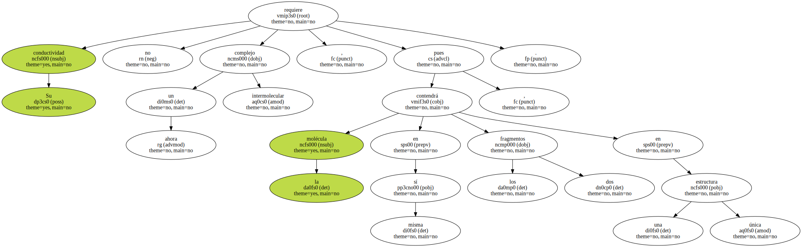
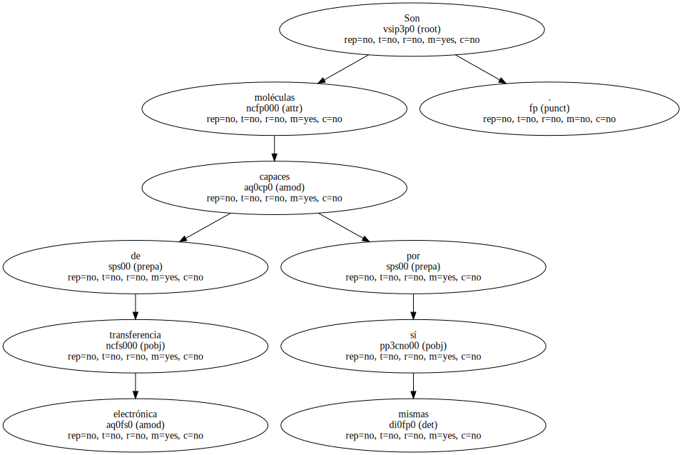

Usualmente , como hemos visto , es un grupo dicianometileno quien cumple este papel en el TNQ y análogos , y se ha mantenido en la mayoría de moléculas aceptoras sintetizadas con sistemas n extendidos.
Sin embargo , desde hace algún tiempo también se utiliza como agrupación funcional en la molécula aceptora el grupo cianimino ( =N-CN ) con el que recientemente se han sintetizado un ya elevado número de nuevas moléculas aceptoras , que junto con los dadores apropiados , han conducido a nuevos compuestos orgánicos conductores.

Una última línea de trabajo dirigida a la obtención de metales orgánicos , en uno de sus aspectos más interesantes , pretende soslayar la dificultad de conseguir los complejos a través del empleo de un solo componente : una molécula mixta dador-aceptor ( D-A ) en lugar de una molécula dadora y otra aceptora.
Su conductividad no requiere ahora un complejo intermolecular , pues la molécula contendrá en sí misma , los dos fragmentos en una única estructura.
Son moléculas capaces de transferencia electrónica por sí mismas.
